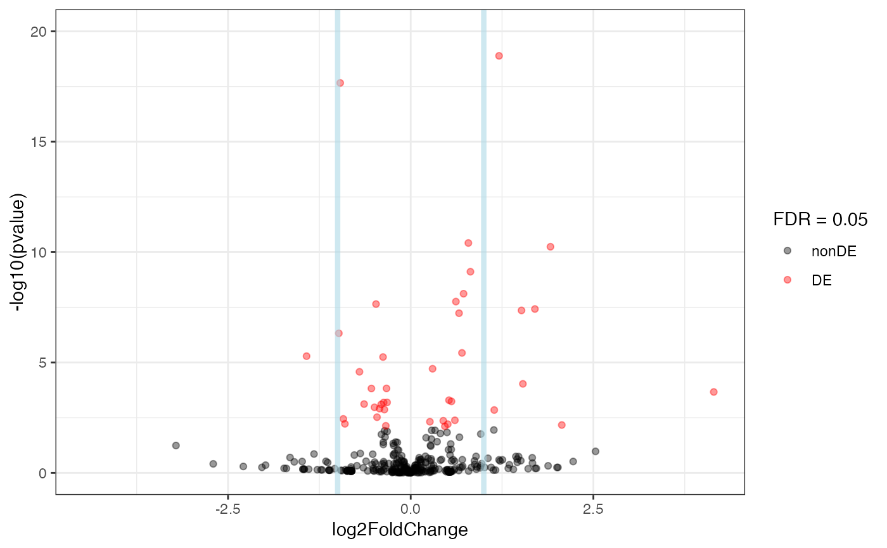

Volcano plot for log fold changes and log p-values in the ggplot2 framework, with additional support to annotate genes if provided.
plot_volcano(
res_obj,
FDR = 0.05,
ylim_up = NULL,
vlines = NULL,
title = NULL,
intgenes = NULL,
intgenes_color = "steelblue",
labels_intgenes = TRUE,
labels_repel = TRUE
)A DESeqResults object
Numeric value, the significance level for thresholding adjusted p-values
Numeric value, Y axis upper limits to restrict the view
The x coordinate (in absolute value) where to draw vertical lines, optional
A title for the plot, optional
Vector of genes of interest. Gene symbols if a symbol
column is provided in res_obj, or else the identifiers specified in the
row names
The color to use to mark the genes on the main plot.
Logical, whether to add the gene identifiers/names close to the marked plots
Logical, whether to use geom_text_repel for placing the
labels on the features to mark
An object created by ggplot
The genes of interest are to be provided as gene symbols if a symbol
column is provided in res_obj, or else b< using the identifiers specified
in the row names
library(airway)
data(airway)
airway
#> class: RangedSummarizedExperiment
#> dim: 64102 8
#> metadata(1): ''
#> assays(1): counts
#> rownames(64102): ENSG00000000003 ENSG00000000005 ... LRG_98 LRG_99
#> rowData names(0):
#> colnames(8): SRR1039508 SRR1039509 ... SRR1039520 SRR1039521
#> colData names(9): SampleName cell ... Sample BioSample
dds_airway <- DESeq2::DESeqDataSetFromMatrix(assay(airway),
colData = colData(airway),
design = ~ cell + dex
)
# subsetting for quicker run, ignore the next two commands if regularly using the function
gene_subset <- c(
"ENSG00000103196", # CRISPLD2
"ENSG00000120129", # DUSP1
"ENSG00000163884", # KLF15
"ENSG00000179094", # PER1
rownames(dds_airway)[rep(c(rep(FALSE, 99), TRUE), length.out = nrow(dds_airway))]
) # 1% of ids
dds_airway <- dds_airway[gene_subset, ]
dds_airway <- DESeq2::DESeq(dds_airway)
#> estimating size factors
#> estimating dispersions
#> gene-wise dispersion estimates
#> mean-dispersion relationship
#> final dispersion estimates
#> fitting model and testing
res_airway <- DESeq2::results(dds_airway)
plot_volcano(res_airway)
